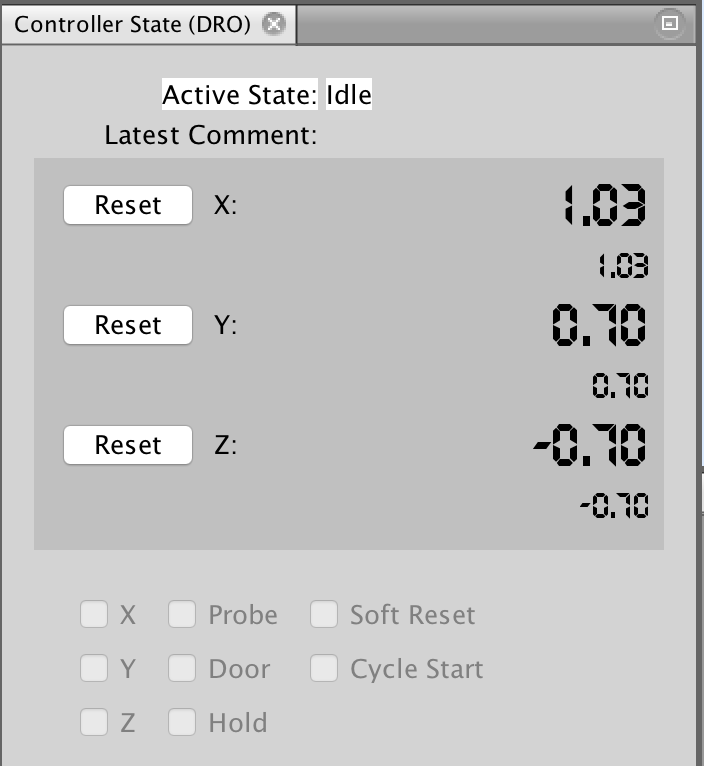
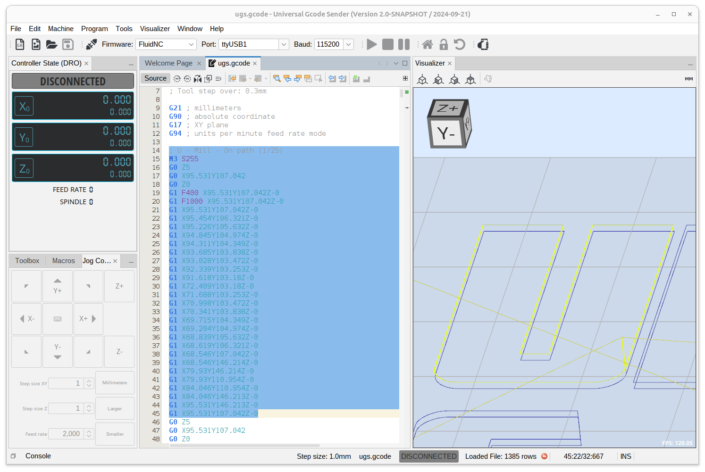
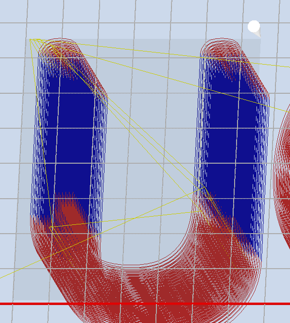

Universal Gcode Sender
A full featured gcode platform used for interfacing with advanced CNC controllers like GRBL
and TinyG.
Universal Gcode Sender is a self-contained Java application which includes all external dependencies,
that means if you have the Java Runtime Environment setup UGS provides the rest.


Downloads
See the Downloads page.
Features
- Cross platform, tested on Windows, OSX, Linux, and Raspberry Pi.
- Executable All-In-One JAR file - if you have java there is nothing to install. The JAR file includes native dependencies for all supported operating systems.
- 3D Gcode Visualizer with color coded line segments and real time tool position feedback.
- Duration estimates.
- Over 3000 lines of unit test code, and another 1000 lines of comments documenting the tests.
- Configuratble gcode optimization:
- Remove comments
- Truncate decimal precision to configurable amount
- Convert arcs (G2/G3) to line segments
- Remove whitespace
GRBL 1.1 Features
-
Overrides and Toggles
Platform version only. Easily control the real time feed and speed overrides by enabling the Overrides widget in the Window menu.
-
Jog Mode
With older versions of GRBL UGS is pretty reliable when it comes to jogging, but there are limitations. With GRBL 1.1 this is no longer the case when using the new JOG MODE syntax. This first-class jog mode guarantees the GCODE state will be unaltered, and also allows you to stop a jog while it is in progress. UGS uses this new syntax automatically when it detects a version of GRBL which supports it. During a jog use the STOP action to stop an in-progress jog:>> $J=G21G91X0.7F11 ok >> $J=G21G91Y0.7F11 ok >> $J=G21G91Z-0.7F11 ok -
Pin State Reporting
Platform version only. New flags have been added to the controller state window to indicate when various external switches are enabled. -
Message resolution GRBL removed most help and error messages to make room for new features on the micro controller, they are now provided as data files in the grbl source code. UGS uses these data files to resolve all error codes and setting strings.
Screenshots
Platform
The next generation of UGS. Fully modular front end powered by the same robust library created for the Classic GUI.
Fully modular GUI, reconfigure windows to suite your needs.
Built in gcode editor with line highlighter.

Customizable keybindings.

Zoom to selection with command and drag.

Right click in the visualizer to jog to a specific XY location.

Classic
The classic GUI has everything you need to get started.
3D visualizer.

Job complete dialog.

Machine control.

Donations
Universal Gcode Sender is free software developed and maintained in my free time for the hobby cnc community. If you would like to make a monetary donation, all proceeds will be used to try convincing my wife that it is worth my time.